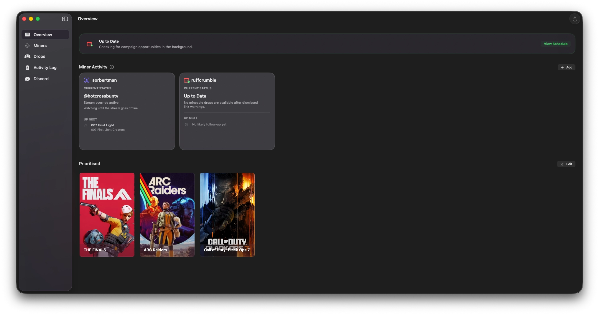
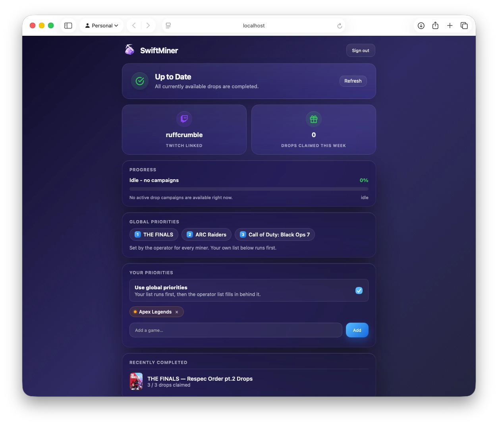
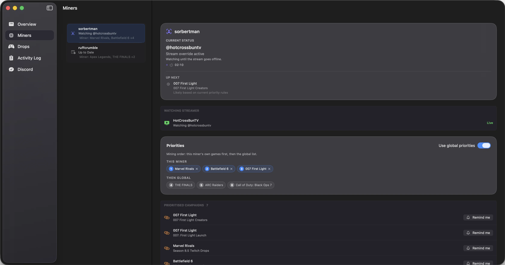
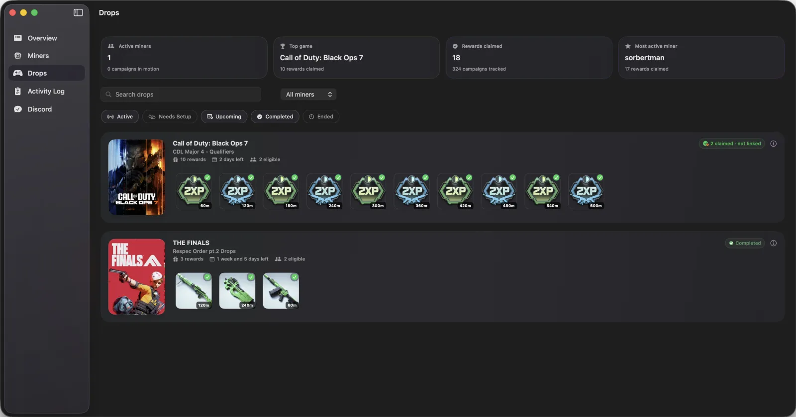
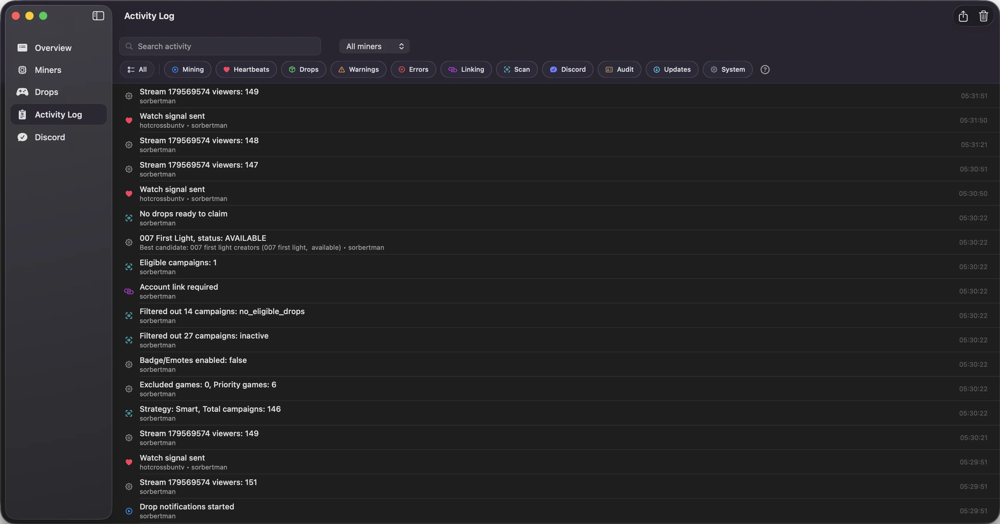

Everything in one view
See active Twitch Drops miners, stream status, upcoming rewards, and priority games from a single macOS dashboard.
Set it once, and SwiftMiner does the watching for you — finding eligible streams, tracking every campaign, and claiming Twitch Drops rewards across all your accounts. No missed drops, no browser tab required.
A free Twitch Drops miner and claimer for macOS, built for long-running background sessions instead of browser tabs or container setup.

Learn more: Twitch Drops miner for Mac · auto-claim rewards · no Docker required · help docs
Stream selection, progress tracking, and reward claiming keep moving in the background for every account you manage.
Run drops for your profile, alt accounts, or friends simultaneously. Track progress and active campaigns from one unified screen.
SwiftMiner acts as a Twitch Drops claimer, claiming rewards the moment they unlock so you do not have to keep checking.
Check progress and control your miners from your phone or any device on your network.
Let friends set up, reconnect, and check their miners through Discord while SwiftMiner handles the Drops in the background.
New features and Twitch compatibility fixes install themselves — powered by Sparkle, with no manual downloads.
Keep SwiftMiner tucked away while miners run, with quick access when you need to check progress.
Check progress and control miners from your phone, tablet, or any browser on your network without keeping the main Mac app in front.

SwiftMiner keeps accounts, priorities, campaign progress, and logs organised so the UI stays manageable as your setup grows.
See active Twitch Drops miners, stream status, upcoming rewards, and priority games from a single macOS dashboard.
Add your Twitch account, alt profiles, or friends and keep each miner configured with its own priorities.

Track active, completed, and upcoming Twitch Drops while SwiftMiner chooses eligible streams and keeps progress moving in the background.

Review stream changes, claim attempts, scan results, and account events from a readable local activity log.

Set your preferences once, then let SwiftMiner handle the repetitive work.
Authenticate securely and keep account data on your Mac.
Prioritize the campaigns you care about most.
Eligible streams are selected and monitored automatically.
Claimable rewards are handled as soon as they are ready.
SwiftMiner uses the macOS security tools already on your Mac, with controls for the parts that can be reached from a browser or another device.
Twitch tokens are stored in Keychain instead of plain-text app files.
The optional Web Dashboard supports login protection before browser access is allowed.
Network and tunnel features are opt-in, so local use stays local unless you enable them.
When internet access is enabled, Twitch OAuth keeps people limited to their own miners.
A mildly ridiculous amount of native Swift engineering for a simple job: keep Twitch Drops moving while you work, play, or step away.
Designed for low CPU, memory, and power use, so you can leave miners running quietly in the background while you work, play, or step away.
Built for macOS 26.0 or later, with native architecture slices for both Apple Silicon and Intel Core processors. Full speed, no emulation needed.
Written with Apple's app frameworks instead of an Electron shell or bundled web app, so controls feel immediate and the app stays light.
Every part of SwiftMiner is public and auditable, from the app to the update flow. You can inspect the code, build it yourself, or follow along on GitHub.
Free, open source, and ready in about a minute. Download the latest signed release and let SwiftMiner handle the watch progress.
Get SwiftMinerFree · Requires macOS 26.0 or later · Auto-updates.